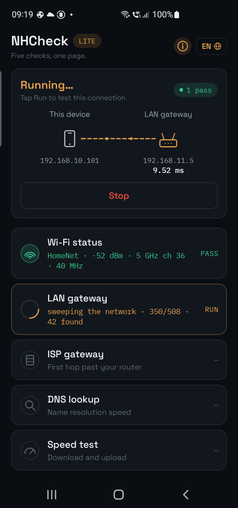
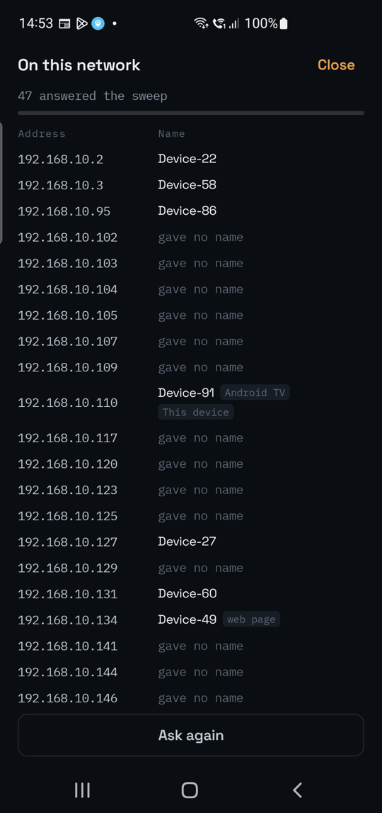

NHCheck Lite
Five checks run in order, about thirty seconds in all. The speed test is last because it saturates the connection and would corrupt the figures before it. Two of the rows open into a page of their own: the radio you are on — the air around you, or the mobile link — and the devices on your network.
| Check | What it does |
|---|---|
| Wi-Fi status | Reads signal, noise, channel, band, standard and security, then scans the neighbours and names the clearest channel in the band. Off Wi-Fi the row becomes Link status and judges the other radio instead: the operator, the generation, the signal and its quality, the band, and the cells in range |
| LAN gateway | Eight echoes to your router — latency, loss and jitter of the Wi-Fi link itself — then a sweep of the network behind it, counting what answered |
| ISP gateway | Finds the first public router past yours and measures it with six echoes |
| DNS lookup | Resolves a name through your network's resolver and times it |
| Speed test | Download then upload, eight seconds each over parallel streams, measured after a warm-up |

| PASS | Measured, and inside every target |
| WARN | Measured, and outside at least one — the recommendation says which |
| FAIL | Nothing answered, the name did not resolve, or no data moved |
| SKIP | Not measured, and not a fault — the network's policy prevented it |
| Check | WARN when | FAIL when |
|---|---|---|
| Wi-Fi | Signal below −67 dBm · signal-to-noise below 25 dB · another network on your channel · three overlapping · radar-shared channel · open or outdated security | Not connected |
| Mobile link | RSRP below −110 dBm · signal-to-interference-and-noise below 0 dB · still on 2G or 3G | RSRP below −120 dBm |
| LAN gateway | Loss 1% or more · average over 100 ms · jitter over 60 ms, or larger than the link's own average | No reply |
| ISP gateway | Loss 1% or more · average over 150 ms · jitter over 60 ms | — |
| DNS | Slower than 300 ms | Did not resolve |
| Speed | Download below 5 Mbps · upload below 1 Mbps | A direction moved nothing |
A silent ISP gateway is reported as SKIP, not FAIL: those routers ignore probes as routine policy. A direction that moves nothing is reported as a failure with its reason, never as 0.00 Mbps.
The Wi-Fi row, on Wi-Fi, opens an analyser. Every network in range is drawn as an arc over the spectrum it occupies, so two networks nominally on different channels are visibly on top of each other when they overlap. Beside it, every radio ranked by strength, and your own link traced second by second — signal as bars, signal-to-noise as a red line over them — so a sag shows as a shape rather than disappearing into an average.
The same row on mobile data opens the mobile link instead: the operator and the generation, the signal with its quality, the band and frequency, and every cell the phone can hear — each with its own signal, so the one you are registered to can be read against the rest. It is traced second by second like the Wi-Fi link. Android gates the cell identities behind the Location permission, for the same reason it gates the Wi-Fi scan; see the privacy policy.
The LAN row opens the list of what is on your network: every address that answered the sweep, with the name it publishes — a hostname, a UPnP name, or the service it advertises — your router and this phone marked. The names come from the announcements those devices already broadcast, over mDNS, SSDP and Bonjour. They are read on your device, shown on it, and held only while the app is open; see the privacy policy.

Under the five checks, a page of tests a run does not make. Each starts when you tap it.
Stability pings your router, your provider’s first router and the internet four times a second for a minute and draws every echo as a cell: answered, slow or lost. What matters is which of the three lost an echo when the others did not. The internet is judged first, because it is the one you feel: if it drops and your router drops at the same moments, the break is the Wi-Fi or the router, with radar avoidance named when you are on a DFS channel; if only your provider’s first router drops with it, it is the line; if nothing nearer drops, it is past your router. A router that ignores a few pings while the internet is untouched is answering its own pings last, and is not called a fault.
Packet size sends echoes that must not be split, in growing sizes, and finds the largest that crosses. A path that says “too big” when it must is normal — PPPoE and some fibre lines carry 1492 — and apps adapt. A path that drops big packets without saying so is a black hole: connections that send big packets stall, which is how a few sites hang while the rest load. On Android the phone’s own ping does the sending, and a phone whose ping cannot forbid splitting says so rather than blaming the network.
Speed between two phones measures the Wi-Fi alone. One phone taps Receive, the other taps Send, and four connections carry filler in each direction. Two phones through a router cross the Wi-Fi twice, so what arrives is about half what one phone can get; the page uses that to say whether the Wi-Fi or the line is what limits your internet, using the speed from your last run. An iPhone and an Android phone measure each other.
On the DNS page, after the comparison, one random name under google.com that cannot exist is asked of your resolver and of each public one. A resolver that answers with an address is rewriting DNS, and a public resolver that does is being answered for by something on your network.
On the Wi-Fi row, the app remembers what answered for each network the last time — the router’s address, the maker of its access point, the DNS servers — and says so when a name is suddenly answered by something else. Replace your router and it will tell you once; if you did not, treat the network with care. Neither Android nor iOS lets an app read the hardware addresses of the other devices on your network, so the LAN page cannot name what made each one.
Android requires a location permission before an app may read the connected Wi-Fi network's name or scan for neighbours. NHCheck Lite asks for it for that alone: it never requests a location fix, never touches GPS, and never reads location in the background. The same permission gates the identities of the mobile cells in range, which is the other thing it is used for. Decline it and every check still runs — you lose the network name, the channel advice, the analyser's neighbour list and the detail of the mobile link. See the privacy policy.
| Platform | Android phone or tablet — on Google Play |
| Price | Free — no subscription, no advertising |
| Languages | English, العربية, Español, اردو, Português and Français — switched in place, with Arabic and Urdu laid out right to left |
| Appearance | Dark, light, or whatever the phone is set to |
| Account | None |